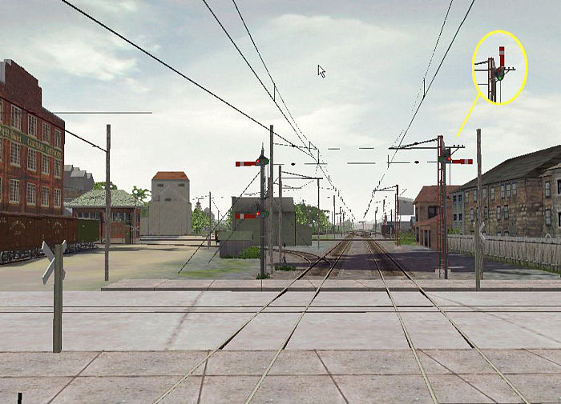

The trick is to make the signals as a ‘hazard’ item. Hazards are special MSTS models that react to trains by running specific animations when a train approaches or when the train sounds the horn. The hazard most people are familiar with are the track-side deer. They look up and then run away when a train approaches. What I did was build a signal tower and semaphore with the appropriate animation. By playing with the ‘idle loop’ timing and the ‘scamper loop’ timing I could create what appears to be a random delay between sounding of the whistle and raising of the semaphore. There is a fairly narrow range of distances - 160m to 200m - where the train whistle will activate the hazard. I was careful with placement of the hazard’s handle so that trains stopped within whistle activation range.

The photo above shows how it works. Trains approaching the interlocking are required to stop short of Talbot street ( seen in the forground ). They whistle the BX Tower ( middle distance on the left ) and after a random delay the appropriate signal arm raises.
It's a great technique that has allowed me to simulate this little piece of L&PS operations. I hope you can use it.
Most of the info I needed was in the TechDocs on the MSTS CD in the file "How to make a track hazard". This isn't a step-by-step tutorial but here is some of the essential information:
Here is how my .haz file looks:
Tr_Worldfile (
FileName ( SignalBladeRight.s )
Distance ( .01 )
Speed ( .0001 )
Idle_Key ( 0 280 )
Idle_Key2 ( 0 250 )
Surprise_Key_Left ( 0 290 )
Surprise_Key_Right ( 0 300 )
Success_Scarper_Key ( 300 3300 )
)
The signal spends most of its time randomly in one of the Idle_Key loops. When the train approaches, the model begins running the Surprise_Key loops. I designed my model so that it shows a stop signal and does nothing during both the Idle_Key and Surprise_Key loops. The hazards animate at 30 keys per second so you can see these loops run about 8 to 10 seconds long. Their purpose is to cause a random delay when the whistle is sounded. After the operator sounds the whistle, the currently running loop will finish and then the model runs the 'Success_Scarper_Key' animation. This animation raises the semaphore blade and holds it up for 100 seconds before lowering it again. The distance and speed are computed to provide 100 seconds of 'scamper' time ( .01m divided by .0001m/sec ) but essentially no real movement of the signal.
My model has a total animation of 3300 keys arranged as follows:
Key 0 to 300, the semaphore blade is in the stop position.
Key 300 to 330, the semaphore blade raises to the clear position
Key 330 to 3270, the semaphore blade is held in the clear position
Key 3270 to 3300, the semphore blade falls back to the stop position.
Here is how one of the animation nodes look in my shape file:
anim_node SEMAPHORE (
controllers ( 1
tcb_rot ( 5
slerp_rot ( 0 -0.5000001 0.5 0.5 0.4999999 )
slerp_rot ( 300 -0.5000001 0.5 0.5 0.4999999 )
slerp_rot ( 330 -0.7071068 1.152023E-07 0 0.7071068 )
slerp_rot ( 3270 -0.7071068 1.152023E-07 0 0.7071068 )
slerp_rot ( 3300 -0.5000001 0.5 0.5 0.4999999 )
My semaphore model has the crank and pushrods animated also, but this should give you the basic idea.
Placing the semaphore in RE is a bit tricky. On the L&PS there are very specific spots where trains are required to stop. In one case it is defined by a road crossing. At another location there were large 'All Trains Must Stop' signs beside the track. The diamond shaped 'hazard handle' needs to be positioned 160m - 200m from the place where the trains stop and sound their whistle. Use your RE 'Placement Window' coordinates to get an exact measurement. I had one problem though. Once the 'hazard handle' was placed, I couldn't move the actual semphore signal to its proper spot near the 'stopping zone' . RE prevents you from putting the hazard too far away from its handle. To solve this, I left the handle where it needed to be and went in and manually edited the .W world file to reposition the semaphore signal to its correct location near the 'stopping zone'.
Another issue you are going to run into is that the whistle activated signals really only work well from one direction. You can get the distances right for trains from one direction, but most likely they won't be right for trains coming from the other. For my application this didn't matter since the interlocking plant had separate signals north and south of the diamond. The signals south of the diamond respond to northbound trains and vice versa for the signals north of the diamond.
Important note: these signals are considered to be 'Animal Hazards'. They will be invisible during Explore mode and you must set 'Animal Hazards' to 100% in AE to be sure they are visible during activities. You can still use other 'animal hazards' elsewhere along the track ( although 100% of them will be visible ) and the 'people hazards' work normally. I haven't run into any restrictions yet on the number of hazards. I now have 5 different types of whistle activated signals along with the default deer and spottter and haven't had any difficulty.
I have a separate .haz file for each hazard so I end up with several of them in my route folder. ie
SemaphoreBladeRight.haz
SemaphoreBladeLeft.haz
Semaphore2Blades.haz
etc
Each .haz file has a corresponding .s shape file in my Global\Shapes folder and the textures they need are in the Global\Textures folder.
In addition, I added each hazard to my route's .ref file using a format like this:
Hazard (
Class ( Hazards )
Filename ( semaphorebladeright.haz )
Align ( None )
Description ( "SemaphoreBladeRight" )
)
Well I hope this helps others who might want to try a Hazard model. They can be train activated, whistle activated and randomized using the AE 'Hazard Freq' control.
This technique won't work with any of the existing searchlight signal models, but it could be done with a custom built searchlight. Hazard models are not able to control a signal light color - they can only control animation. The trick is to make a cube with red on one face and green on the opposite face. Arrange the animation so that the correct colored face rotates into the lit area of the signal head. I have used this method on my semaphores to light up the correct colored lens for night viewing.
I also like the idea of populating the station stops with groups of passengers that vary from run to run. I'm trying to work out something similar for the flag stops along my route. I'd like the stop flag to appear randomly at some of my stops to add variety to my passenger activities.
Let's see what you all can do with this technique.
I hope you find this helpful.
Wayne
Building the L & PS